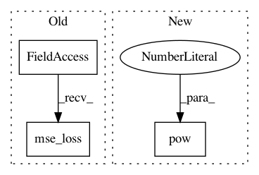

79ec8f5009d71a891176f23af20fc077f058713a,algo/ppo.py,PPO,update,#PPO#Any#,32
Before Change
1.0 + self.clip_param) * adv_targ
action_loss = -torch.min(surr1, surr2).mean()
value_loss = F.mse_loss(return_batch, values)
self.optimizer.zero_grad()
(value_loss * self.value_loss_coef + action_loss -
dist_entropy * self.entropy_coef).backward()
After Change
value_pred_clipped = value_preds_batch + \
(values - value_preds_batch).clamp(-self.clip_param, self.clip_param)
value_losses = (values - return_batch).pow(2)
value_losses_clipped = (value_pred_clipped - return_batch).pow(2)
value_loss = .5 * torch.max(value_losses, value_losses_clipped).mean()
self.optimizer.zero_grad()
In pattern: SUPERPATTERN
Frequency: 3
Non-data size: 3
Instances
Project Name: ikostrikov/pytorch-a2c-ppo-acktr
Commit Name: 79ec8f5009d71a891176f23af20fc077f058713a
Time: 2018-09-25
Author: ikostrikov@gmail.com
File Name: algo/ppo.py
Class Name: PPO
Method Name: update
Project Name: ikostrikov/pytorch-a2c-ppo-acktr
Commit Name: 0cfdc391714cc2eea9502aa7e0019d24bae19192
Time: 2018-11-25
Author: ikostrikov@gmail.com
File Name: algo/ppo.py
Class Name: PPO
Method Name: update
Project Name: ray-project/ray
Commit Name: d1dd5d578e0cbdee651eeb125dcb78e36b9cf322
Time: 2020-10-22
Author: kingsley@kingsleykuan.com
File Name: rllib/agents/a3c/a3c_torch_policy.py
Class Name:
Method Name: actor_critic_loss